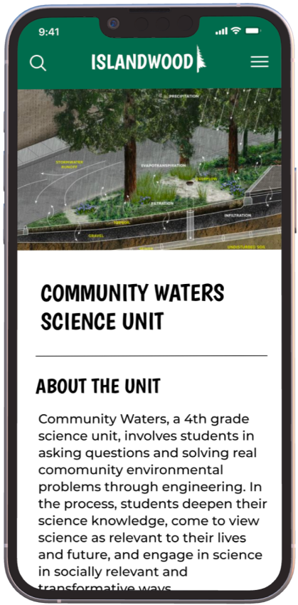
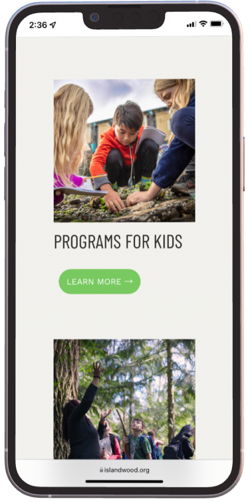

IslandWood's transformation journey served as a foundational step in expanding and refining my design skills, from ideation to digital implementation, reflecting a commitment to enhancing environmental education through innovative design solutions.
This project deepened my grasp of user-centric design principles, emphasizing the fusion of branding with digital experiences. Key takeaways included the significance of user immersion, the power of visual elements in brand storytelling, the iterative design process, and the delicate balance between aesthetics and usability in mobile interface design.
Screen 4: Community Waters Science Unit Page
Screen 3: Education Programs Page
Science Unit


Using Figma, I translated these hand-drawn sketches into low-fidelity wireframes.
Prototype with Pencil and Paper, Highlighting Key User Flows

Beginning with initial sketches on paper, I envisioned and outlined four crucial screens—Homepage, Hamburger Menu, Education Programs Page, and Community Waters Science Unit Page—each pivotal in the user journey and experience.
In crafting the definitive logo for IslandWood, I transitioned from conceptual sketches to a refined, high-fidelity design using Figma.
Logo Brainstorm with Pencil and Paper
In exploring new logo ideas, I first sketched rough ideas using pencil and paper, trying to involve keywords that capture IslandWood's overall branding and message of connection to nature.
IslandWood's original logo, while nature-centric, lacked distinctiveness and a clear association with their mission.

Although their social media presence is consistent, the content lacks distinction and fails to captivate. To enhance brand cohesion, I aligned their social media aesthetic with their website's nature-inspired palette, infusing moments of brightness through strategic neutral elements.

In this project, I aimed to revitalize IslandWood's visual identity by redesigning their logo and mobile interface. This effort aimed to harmonize elements of nature and modern design, symbolizing their commitment to innovative environmental education.